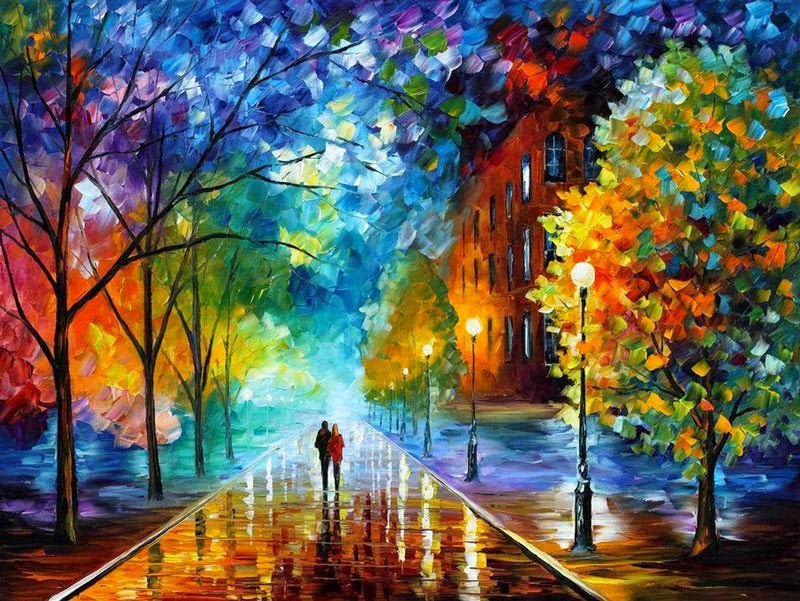
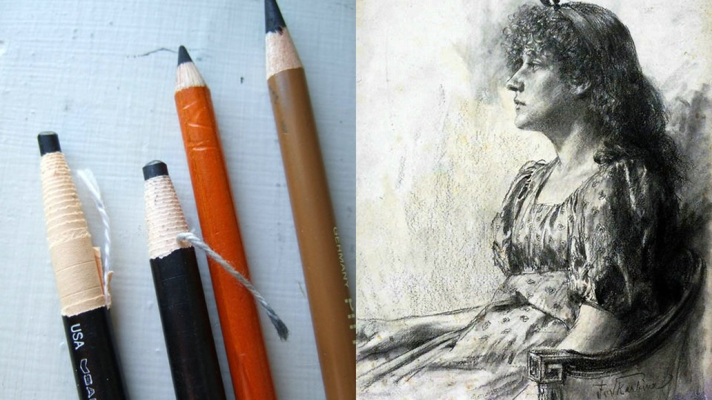

La expresión artística nace de nuestro interior, se convierte en gesto por nuestro cuerpo y explota en magia a través de pinceles, lápices y sueños de creatividad... para todos aquellos que sienten el placer de la pintura, la necesidad del dibujo y la pasión por el arte, les ofrecemos un programa personalizado para el desarrollo artístico según sus intereses.
Los talleres se darán de forma personalizada y en el horario escogido por el interesado. El alumno Obtendrá conocimientos clásicos y podrá experimentar con técnicas modernas y diversos materiales. Según el avance y el seguimiento de su obra, tendrá la oportunidad de exponer en nuestra galería e interactuar con nuestros proyectos artísticos. En este taller se valoran las diferentes motivaciones e inquietudes de cada artista, reconociendo y potencializando las diferentes habilidades de los mismos, motivando el descubrimiento y el perfeccionamiento de las técnicas y del estilo propio.
